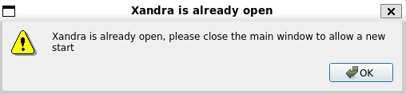
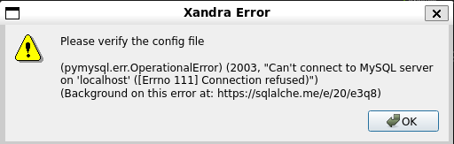

Solución de problemas
Xandra no permite abrir nueva ventana
Xandra sólo permite tener una ventana abierta a la vez debido a que utiliza tecnologías como websockets cuyo proceso está ligado a un puerto en particular (5001), de igual manera se pretende evitar la duplicidad de consolas ejecutando FCTHostControl para prevenir problemas con la ejecución de las pruebas. No obstante este diseño tiene como inconveniente que si el proceso principal de Xandra se queda congelado en segundo plano, Xandra no permitirá abrir una nueva ventana.
Failure
[Errno 98] Address already in use
Xandra is already open, please close the main window to allow a new start

Para solucionar éste problema es necesario matar el proceso principal de Xandra, ejecute los siguientes comandos para realizar tal cometido:
-
Ingresar a la carpeta raíz de Xandra:
xandra-path -
Obtener PID (process id) de xandra:
fuser xandra.pyInfo
- Si se muestra como resultado un número entero, entonces xandra se encuentra ejecutándose en segundo plano.
fuser xandra.py /usr/local/Foxconn/automation/Xandra/xandra.py: 2326 -
Matar el proceso de xandra:
fuser xandra.py 2> /dev/null | xargs kill
Tip
Puede utilizarse el comando xandra-kill el cual ejecuta los pasos mencionados anteriormente de forma automática.
Todas las terminales se quedan esperando el USB
En ocasiones todas las terminales se quedan esperando a que se liberen los puertos usb, ésto se puede solucionar o bien iniciando todas las terminales en caso de que una no lo esté, desatorando físicamente una fixtura trabada y en un caso extremo copiando y pegando nuevamente la carpeta que contiene al FCTHostControl para posteriormente reiniciar Xandra.
-
Ejecutar el comando
xandra-configen una terminal:xandra-config -
Identificar la configuración
fctHostControlpara poder ubicar la localización de la carpeta delFCTHostControl.Example
fctHostControl": [ { "path": "/usr/local/Foxconn/automation/DA194/Bahubali_Sparrow_C3_4.2", "executable": "FCTHostControl", "config": "FCTHostControl.config" }, { "path": "/usr/local/Foxconn/automation/DA194/Bahubali_Sparrow_C3", "executable": "FCTHostControl", "config": "FCTHostControl.config" } ], -
Copiar y pegar la carpeta contenedora del
FCTHostControlfctHostControl.pathpara crear una copia dentro de la misma ubicación. - Eliminar la carpeta original.
- Renombrar la carpeta copia para que coincida con la configuración
fctHostControl.path. - Reiniciar Xandra.
Error al conectarse con la base de datos
Si se muestra una ventana con el error mostrado a continuación, es necesario iniciar Xampp para ejecutar correctamente Xandra.
Failure
(pymysql.err.OperationalError) (2003, "Can't connect to MySQL server on 'localhost' ([Errno 111 Connection refused)")
(Background on this error at: https://sqlalche.me/e/20/e3q8)

- Ejecutar los siguientes comandos:
sudo systemctl start xampp.servicesudo systemctl status xampp.service
Failure
Si tras ejecutar los comandos anteriores se muestra un error relacionado con libc.so.6 o libdl.so.2, realiza los pasos de la sección Xamp no inicia para resolverlo.
Xampp no inicia (problema libc.so.6, libdl.so.2)
Si se muestra un error similar al siguiente, siga los pasos mostrados a continuación para poder ejecutar Xampp dentro de CentOS:
** (gedit:10150): WARNING **: 10:15:59.822: Set document metadata failed: Setting attribute metadata::gedit-position not supported
[root@localhost ~]# sudo /opt/lampp/lampp start
/bin/sh: error while loading shared libraries: libdl.so.2: cannot open shared object file: No such file or directory
/bin/sh: error while loading shared libraries: libdl.so.2: cannot open shared object file: No such file or directory
/bin/bash: error while loading shared libraries: libdl.so.2: cannot open shared object file: No such file or directory
/bin/sh: error while loading shared libraries: libdl.so.2: cannot open shared object file: No such file or directory
/opt/lampp/bin/gettext: error while loading shared libraries: libc.so.6: cannot open shared object file: No such file or directory
id: error while loading shared libraries: libc.so.6: cannot open shared object file: No such file or directory
/opt/lampp/share/xampp/xampplib: line 11: test: -ne: unary operator expected
/opt/lampp/bin/gettext: error while loading shared libraries: libc.so.6: cannot open shared object file: No such file or directory
XAMPP: cat: error while loading shared libraries: libc.so.6: cannot open shared object file: No such file or directory
/bin/sh: error while loading shared libraries: libdl.so.2: cannot open shared object file: No such file or directory
rm: error while loading shared libraries: libc.so.6: cannot open shared object file: No such file or directory
netstat: error while loading shared libraries: libc.so.6: cannot open shared object file: No such file or directory
/bin/sh: error while loading shared libraries: libdl.so.2: cannot open shared object file: No such file or directory
netstat: error while loading shared libraries: libc.so.6: cannot open shared object file: No such file or directory
/bin/sh: error while loading shared libraries: libdl.so.2: cannot open shared object file: No such file or directory
/opt/lampp/bin/gettext: error while loading shared libraries: libc.so.6: cannot open shared object file: No such file or directory
/opt/lampp/bin/httpd: error while loading shared libraries: librt.so.1: cannot open shared object file: No such file or directory
/opt/lampp/bin/gettext: error while loading shared libraries: libc.so.6: cannot open shared object file: No such file or directory
XAMPP: hostname: error while loading shared libraries: libnsl.so.1: cannot open shared object file: No such file or directory
netstat: error while loading shared libraries: libc.so.6: cannot open shared object file: No such file or directory
/bin/sh: error while loading shared libraries: libdl.so.2: cannot open shared object file: No such file or directory
/opt/lampp/bin/gettext: error while loading shared libraries: libc.so.6: cannot open shared object file: No such file or directory
/bin/sh: error while loading shared libraries: libdl.so.2: cannot open shared object file: No such file or directory
/opt/lampp/bin/gettext: error while loading shared libraries: libc.so.6: cannot open shared object file: No such file or directory
XAMPP: cat: error while loading shared libraries: libc.so.6: cannot open shared object file: No such file or directory
/bin/sh: error while loading shared libraries: libdl.so.2: cannot open shared object file: No such file or directory
rm: error while loading shared libraries: libc.so.6: cannot open shared object file: No such file or directory
netstat: error while loading shared libraries: libc.so.6: cannot open shared object file: No such file or directory
/bin/sh: error while loading shared libraries: libdl.so.2: cannot open shared object file: No such file or directory
/opt/lampp/bin/gettext: error while loading shared libraries: libc.so.6: cannot open shared object file: No such file or directory
/opt/lampp/bin/gettext: error while loading shared libraries: libc.so.6: cannot open shared object file: No such file or directory
-
Abrir archivo principal de xampp:
sudo gedit /opt/lampp/lampp -
Modificar la línea
export LD_ASSUME_KERNEL=2.2.5aexport LD_ASSUME_KERNEL=2.8.0:- export LD_ASSUME_KERNEL=2.2.5 + export LD_ASSUME_KERNEL=2.8.0 -
Guardar los cambios realizados en el archivo.
-
Ejecutar los siguientes comandos:
sudo systemctl start xampp.servicesudo systemctl status xampp.service -
Debe mostrarse una salida similar a la siguiente:
Success
XAMPP: Starting Apache.../opt/lampp/share/xampp/xampplib /opt/lampp/share/xampp/xampplib ok. XAMPP: Starting MySQL.../opt/lampp/share/xampp/xampplib ok. XAMPP: Starting ProFTPD.../opt/lampp/share/xampp/xampplib ok.